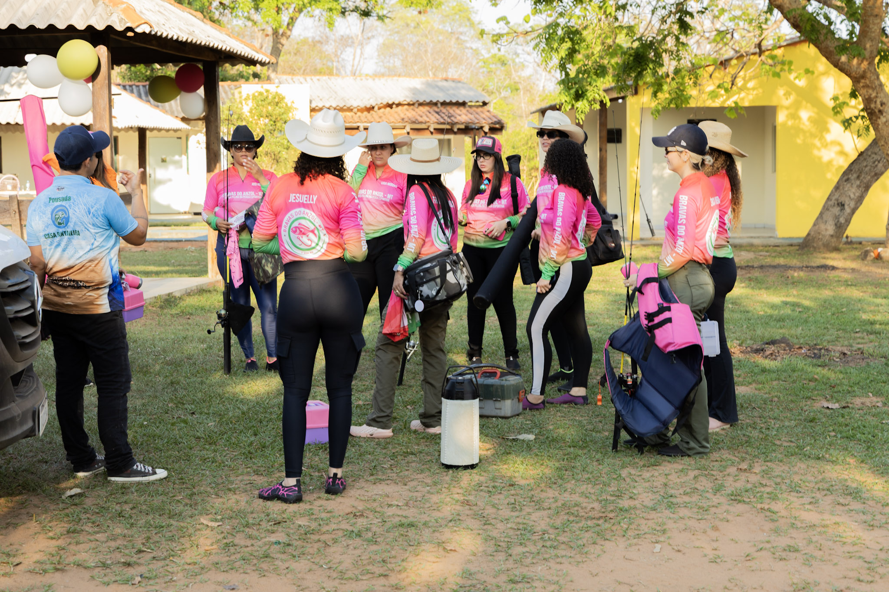

NEGÓCIOS, PESSOAS E OPORTUNIDADES
Grandes conexões
Grandes conexões
também acontecem fora do escritório.
Uma proposta para empresários, líderes e grupos que desejam compartilhar conhecimento, fortalecer relacionamentos e viver algo diferente.
Conheça o projeto ↗